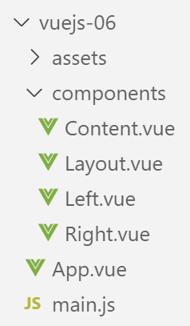

8. المشروع [vuejs-06]: تخطيط عرض باستخدام فتحات

8.1. البرنامج النصي الرئيسي [main.js]
يظل البرنامج النصي الرئيسي [main.js] دون تغيير.
8.2. المكون الرئيسي [App]
فيما يلي كود المكون [App]:
<template>
<div class="container">
<b-card>
<b-alert show variant="success" align="center">
<h4>[vuejs-06] : mise en page avec des slots</h4>
</b-alert>
<Content />
</b-card>
</div>
</template>
<script>
import Content from './components/Content'
export default {
name: "app",
// composants utilisés
components: {
Content
}
};
</script>
يقدم مكون [App] مكونًا جديدًا يسمى [Content] (الأسطر 7 و 14 و 19).
8.3. مكون [Layout]
يُستخدم مكون [Layout] لتحديد تخطيط طرق عرض التطبيق:
<template>
<!-- line -->
<b-row>
<!-- three-column zone -->
<b-col cols="3" v-if="left">
<slot name="slot-left" />
</b-col>
<!-- nine-column zone -->
<b-col cols="9" v-if="right">
<slot name="slot-right" />
</b-col>
</b-row>
</template>
<script>
export default {
name: "patron",
// paramètres
props: {
left: {
type: Boolean
},
right: {
type: Boolean
}
}
};
</script>
تعليقات
- يحدد مكون [Layout] صفًا واحدًا (الأسطر 3–12). ينقسم هذا الصف إلى عمودين:
- عمود يتكون من 3 أعمدة Bootstrap (الأسطر 5–7)؛
- عمود يتكون من 9 أعمدة Bootstrap (الأسطر 9-11)؛
- السطر 5: يعتمد وجود العمود الأيسر (الأسطر 5-7) على قيمة المعلمة [left]، المحددة في خاصية [props] للمكون (الأسطر 20-22)؛
- السطر 9: يعتمد وجود العمود الأيمن (الأسطر 9-11) على قيمة المعلمة [right]، المحددة في خاصية [props] للمكون (الأسطر 23-25)؛
- يجب تعيين قيم المعلمات [left، right] بواسطة مكون أب لمكون [Layout]؛
- السطر 6: لم يتم تحديد محتوى العمود الأيسر. نحن ببساطة نسمي هذا العمود باستخدام علامة <slot>. هنا، سيُسمى [slot-left]. يجب على المكون الذي يستخدم مكون [Content] تحديد ما يريد وضعه في المنطقة المسماة [slot-left]؛
- السطر 10: سيُسمى العمود الأيمن [slot-right]؛
8.4. مكون [Right]
مكون [Right] هو كما يلي:
<template>
<!-- a message in a warning-type alert -->
<b-alert show variant="warning" align="center">
<h4>{{msg}}</h4>
</b-alert>
</template>
<!-- script -->
<script>
export default {
name: "droite",
// paramètres
props: {
msg: String
}
};
</script>
- الأسطر 3–5: يعرض المكون [Right] رسالة في تنبيه [warning]. يتم تعريف هذه الرسالة [msg] كمعلمة مكون في السطر 14. لذلك يجب على المكون الأصلي تزويدها بقيمة؛
8.5. المكون [Left]
المكون [Left] هو كما يلي:
<template>
<!-- a message in a primary alert -->
<b-alert show variant="primary" align="center">
<h4>{{msg}}</h4>
</b-alert>
</template>
<!-- script -->
<script>
export default {
name: "gauche",
// paramètres
props: {
msg: String
}
};
</script>
- الأسطر 3–5: يعرض المكون [Left] رسالة في تنبيه [primary]. يتم تعريف هذه الرسالة [msg] كمعلمة مكون في السطر 14. لذلك يجب على المكون الأصلي تزويدها بقيمة؛
8.6. مكون [Content]
تذكر أن مكون [Content] هو المكون الذي تعرضه طريقة العرض الرئيسية [App.vue]:
<template>
<div>
<!-- colonnes gauche et droite remplies -->
<Layout :left="true" :right="true">
<Right slot="slot-right" msg="slot [slot-right] présent et rempli" />
<Left slot="slot-left" msg="slot [slot-left] présent et rempli" />
</Layout>
<!-- colonnes gauche basente. colonne droite remplie -->
<Layout :left="false" :right="true">
<Right slot="slot-right" msg="slot [slot-right] présent et rempli, slot [slot-left] absent" />
</Layout>
<!-- colonnes gauche remplie, colonne droite absente -->
<Layout :left="true" :right="false">
<Left slot="slot-left" msg="slot [slot-left] présent et rempli, slot [slot-right] absent" />
</Layout>
<!-- colonnes gauche présente mais pas remplie, colonne droite remplie -->
<Layout :left="true" :right="true">
<Right slot="slot-right" msg="slot [slot-right] présent et rempli, slot [slot-left] présent mais vide" />
</Layout>
</div>
</template>
<!-- script -->
<script>
import Layout from "./Layout";
import Left from "./Left";
import Right from "./Right";
export default {
name: "contenu",
// composants
components: {
Layout,
Left,
Right
}
};
</script>
العرض المرئي

تعليقات
- يتم استخدام مكون [Layout] 4 مرات (الأسطر 4–7، 9–11، 13–15، 17–19). وبما أن مكون [Layout] يحدد صفًا واحدًا، فإن [القالب] أعلاه يحدد أربعة صفوف. كما يحدد صف [Layout] عمودين:
- عمود يسمى [slot-left] يشغل الأعمدة الثلاثة اليسرى في Bootstrap؛
- عمود يسمى [slot-right] يشغل الأعمدة التسعة اليمنى في Bootstrap؛
- الأسطر 4–7: تحدد صفًا [1] حيث يشغل مكون [Left] العمود [slot-left] ويشغل مكون [Right] العمود [slot-right]؛
- الأسطر 9-11: تحدد صفًا [2] حيث لا يتم عرض العمود [slot-left] ويشغل المكون [Right] العمود [slot-right]؛
- الأسطر 13-15: تحدد صفًا [3] حيث لا يتم عرض العمود [slot-right] ويشغل المكون [Left] العمود [slot-left]؛
- الأسطر 17-19: تحدد صفًا [4] حيث يتم عرض العمود [slot-left] [:left=’true’] ولكن دون ملئه، ويشغل المكون [Right] العمود [slot-right]؛
في النهاية، عمل مكون [Layout] كتصميم لمكون [Content].